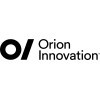

A motivated individual experienced in Educational, Finance & Audit, and Insurance (BFSI) domain with in-depth knowledge of languages and development tools, seeking a position in a growth-oriented company where I can use my skills to the advantage of the company while having the scope to develop my own skills.
Work Experience
TATA CONSULTANCY SERVICES – SYSTEMS ENGINEER
Client – Prudential Insurance
From [01/03/2023] - Presently
Work with functional colleagues to understand functional design requirements, preparing technical specifications and code changes.
Report Development: Design, develop, and maintain crystal reports to meet business requirements.
Code development for new requirements/enhancements and testing for the same.
Data Extraction: Extract data from various data sources, including databases, spreadsheets and APIs to populate reports.
Data Analysis: Analysis data to ensure accuracy, consistency and relevance in reports.
Performance optimization: Optimize report/ Application performance by tuning SQL queries and optimizing data retrieval processes.
Making changes to the designs of already existing pages and performing functionality changes as well.
Identify code deficiencies/errors and develop and implement effective solutions after discussing with the customer.
Working in both a development and production support positions.
Awards: Client Excellency Award – 2, TCS spot award.
Technologies Used:
VB.Net, C#.Net, ASP.Net, MySQL, Autosys, Cyberfusion, Visual Studio 2019, SQL Server 2016, Crystal reports, BitBucket

ORION INNOVATION – SOFTWARE ENGINEER
Client – KPMG Global
From [15/02/2021] - [10/02/2023]
Professional experience in Designing, Coding and Delivering many Internet/SOA applications and Collaborate with internal teams to produce software
Experienced in working hybrid applications using HTML5 and WCF
Very Strong in data structures, algorithms, problem solving skills ,designing for performance, scalability, availability, SQL, Stored-Procedures and Database Triggers in SQL Server
Experience with 5 project Implementation, Upgrade, Rollout, Change Wizard etc
Excellent technical skills in Reports, Forms, Interfaces, Conversions, Enhancements
Knowledge/Experience on Workflow, Adobe Forms
Possess a good understanding in Windows Azure and Cloud based applications
Experienced and understanding with software design patterns
Experience designing application architecture and applying software development best practices and patterns
Proficiency in SQL and data modeling
Extended Visual Studio Team Foundation 2017 to customized application development workflow.
Technologies Used:
DOTNET Core, MVVM, MySQL, WCF, C#, Json ,HTML5, Visual Studio, SQL Server 2016, Microsoft Visio, Azure DevOps, Git Lab.